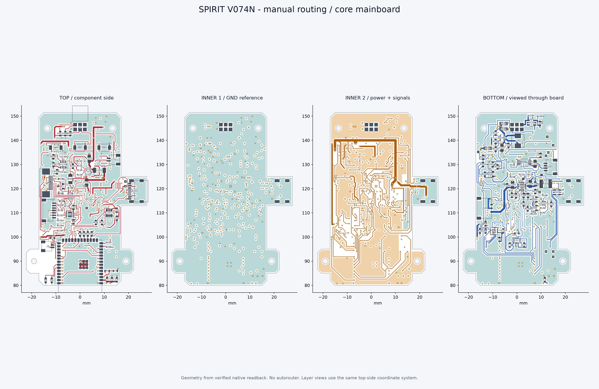

器灵内核 / PCB V0.7.4N / 2026-10-25
两块板已完成第一版手工布线
嘉立创正式工程：Spirit_V074N_Manual_Routed_Final_20261025
已保存、回导复核并重新导出。主板四层，配件适配板双层。
0 / 0主板 / 适配板 DRC
522已核对的元件焊盘
0报告元件重叠
人工逐网未使用自动布线
布线图

点击图可放大。分层图依据校验过的原生几何绘制，统一从正面透视坐标查看；“嘉立创预览”直接取自最终原生工程。部件标注用于阅读，不是生产丝印文件。
检查结果
| 项目 | 主板 | 适配板 |
|---|
| 元件 / 焊盘 | 129 / 457 | 16 / 65 |
| 原生 DRC / 未连接 | 0 / 0 | 0 / 0 |
| 最小同面包络间距 | 约0.218 mm | 约0.550 mm |
| 最小过孔孔径 | 0.20 mm | 0.30 mm |
| 网表与封装 | 522个焊盘核对一致；网络和封装未变 |
| 安装孔 / 板框 | 保持不变；无报告通孔背面干涉 |
原理图ERC各保留2条已有SHOWDANDLING提示，无error。DRC通过不能替代样机电气、射频及机械实测。
本轮布线安排
独立内层GND提供连续参考；电池与系统电源主干加宽，高电流跨层采用成对过孔。USB差分主段沿板侧布置，并保留相邻参考地。U105马达驱动及旁路电容移到背面上部，部分外围和测试点随走线微调，丝印已同步。
ESP32-S3仍在正面最下端，天线朝下伸出板边；NFC接口留在背面，按键在正面，屏幕与电池座保持板边插线方向。
打样前仍需核对已有GC9A01屏的实物排线；USB实际阻抗、满载温升、NFC射频与新接口壳体配合需要样机验证。配件5V预算仍为400mA。
过孔尺寸依据嘉立创国内制造工艺要求核对。没有使用自动布线，没有为清零DRC降低双层板孔径规则。
版本说明及完整记录
器灵 PCB V0.7.4N 手工布线交付
完成日期：2026-10-25（承接2026-10-24的继续布线请求）
用户授权：继续布线，禁止使用自动布线工具。沿用已有接口、器件及布局约束。
实际工程：Spirit_V074N_Manual_Routed_Final_20261025
工程UUID：3f352afa1c134bfda38c18fe4b2307f1
板子：Spirit_JLC；Spirit_Blade_Adapter_V01。
完成内容
两块PCB已完成第一版人工布线与覆铜，保存到嘉立创原生工程。线路的层、宽度、拐点和过孔位置均为逐网人工选择；工具只写入明确坐标、检查几何和重建覆铜，未使用自动布线、路径搜索布线器或Freerouting。
主板四层：顶层信号/器件、内层1完整GND参考、内层2电源/信号、底层信号/器件。GND参考层未布置信号线；天线禁铜区保持。适配板双层，顶底GND覆铜。
电池与系统电源采用较宽主干，VSYS内层主干1.0mm，电源支路一般0.5～0.8mm并配合覆铜。高电流层间转接使用成对过孔。USB差分主段0.254mm线宽、0.1524mm边间距，按90Ω目标布置；实际阻抗仍须结合板厂最终叠层确认。
为减少交叉与电源分割，微调部分电阻、电容、ESD器件及测试点；U105与C119/C120/C121移至背面上部。保留主控正面底部朝下天线、正面三键、背面NFC、板边屏幕座与电池座。未增加器件或改网络。更新移动器件丝印、测试点标记与版本号。
验证结果
主板129件457焊盘；适配板16件65焊盘。522个焊盘逐一与原理图网表核对一致；器件封装及网络未变。
嘉立创原生DRC：两板均0项错误，包括0项未连接；原理图ERC各有2条沿用的SHOWDANDLING警告，无error。本轮未把历史警告抹除。
几何检查无报告元件重叠、通孔背面干涉或新增走线/过孔间距错误。主板同面最小保守包络间距约0.218mm，适配板约0.550mm；板框与安装孔未改。
主板最小过孔孔径0.20mm，适配板0.30mm；适配板保留国内双层板工艺约束，没有为消除DRC降低孔径规则。
原生工程经重新导入、保存、覆铜重建及回读检查；对导出文件中的PCB图元和叠层另做一致性校验。
版本与打开方式
请使用文件 Spirit_V074N_MANUALLY_ROUTED_20261025.epro2 或嘉立创中的 Spirit_V074N_Manual_Routed_Final_20261025。
原布局工程及修改前V074M备份保留。当前EDA版本的物理叠层写入接口尚未实现，因此采用完整原生工程回导来保存叠层。
工作区还有一次回导检查产生的临时项目 Spirit_V074N_Manual_Routed_20261025（无Final），其板组关联未通过检查，不作为交付。当前版本删除/改名API未实现，未能通过API清理；正式版含Final，已打开。
验证边界
这是已连通的第一版布线工程，不等同于整机实物验收。用户已有GC9A01屏的12针顺序/接触面/背光、NFC模块线束与屏幕后射频、USB实际阻抗与信号完整性、整机满载温升/低电量、更新后的壳体高度/导向/限位仍待样机核验。
配件接口沿用韩下双弯插六针；J7与J701对插1:5、2:6、3:3、4:4、5:1、6:2。首版5V配件预算400mA、3V3逻辑50mA，灯带型号与数量未定；协议固件未在本轮实现。电源、开关机及接口的软件约束仍需遵循已有定义。
未下单，未启用自动布线；未提交或推送知识库。
工艺依据：https://www.jlc.com/portal/1/serviceGuide （2026-10-24核对：双层0.30/0.50mm、四层0.20/0.45mm最小过孔内/外径）